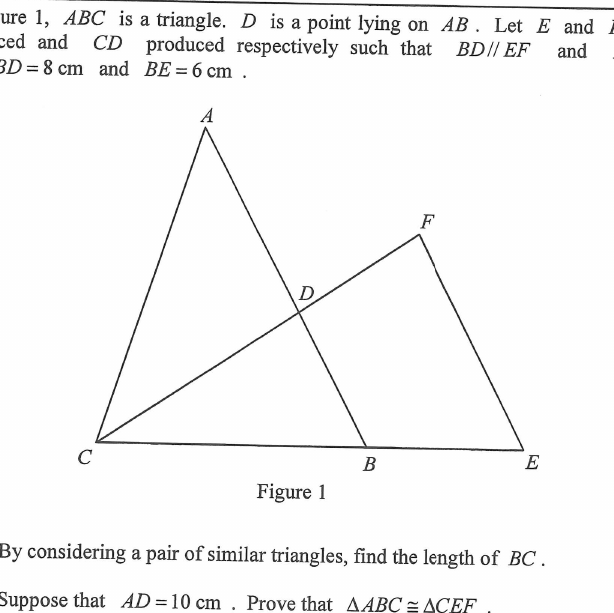

幾何 · 相似三角形與全等三角形

設 $BC=x$。因 $E$ 在 $CB$ 延長線上，$C,B,E$ 共線；因 $F$ 在 $CD$ 延長線上，$C,D,F$ 共線。
在 $\triangle CFE$ 中，$DB$ 連接 $CF$ 與 $CE$ 上的點，且 $DB \parallel FE$，故
$$\triangle CDB \sim \triangle CFE$$
（同位角相等，例如 $\angle CDB=\angle CFE$。）
$$\frac{CB}{CE}=\frac{DB}{FE}\quad\Longrightarrow\quad\frac{x}{x+6}=\frac{8}{x}$$
（因 $EF=BC=x$，且 $CE=CB+BE=x+6$。）
$$x^2=8(x+6)\quad\Longrightarrow\quad x^2-8x-48=0\quad\Longrightarrow\quad (x-12)(x+4)=0$$
因 $x>0$，得 $BC=12\text{ cm}$。
邊一：$AB=AD+DB=10+8=18$，而 $CE=CB+BE=12+6=18$，故
$$AB=CE$$
邊二：已知 $BC=EF$（同為 $12$）。
因 $BD \parallel EF$ 且 $CBE$ 為直線，由同位角得
$$\angle DBC=\angle FEC$$
又因 $D$ 在 $AB$ 上，射線 $BD$ 即射線 $BA$，故 $\angle ABC=\angle DBC$。因此
$$\angle ABC=\angle CEF$$
此角正是兩組等邊的夾角。
在 $\triangle ABC$ 與 $\triangle CEF$ 中：
$$AB=CE,\qquad \angle ABC=\angle CEF,\qquad BC=EF$$
$$\therefore\ \triangle ABC\cong\triangle CEF\quad(\text{SAS})\qquad\blacksquare$$